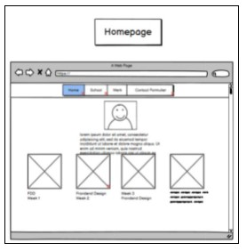

Het doel van een best practice design is, om de uiteindelijke website toegankelijk en gebruiksvriendelijk te maken voor de doorsnee gebruiker. Dit kan zijn d.m.v kaderingen te gebruiken. Als je een kadering gebruikt bij een afbeeling met daarbij tekst, is het voor de gebruiker van de website duidelijk dat het bij elkaar hoort. Ik heb een voorbeeld gepakt van mijn eigen website. Als je naar de afbeelding hieronder kijkt is het duidelijk dat : ‘homepage’ bij de afbeelding hoort.
Een andere voorbeeld zijn alinea’s. Alinea's maken het lezen van teksten een stuk makkelijker. Ook zorgen alinea’s ervoor dat gebruikers weten dat bepaalde stukken tekst bij elkaar horen. Dit komt doordat alinea's zinnen zijn die dicht op elkaar zijn geschreven.
De net opgenoemde voorbeelden komen van het gestalt practice. Gestalt practices zijn bepaalde richtlijnen die het gebruik van een website aantrekkelijker maakt. Dit zijn alle gestalt practices:
Omdat ik aantal van deze principes heb gevolgd ziet mijn website er prettig uit. Neem bijvoorbeeld mijn homepage. De icoontjes die als linkjes dienen naar de onderwerpen zijn symetrisch tegenover elkaar gezet, dit ziet er zo netjes uit en is daardoor prettig te gebruiken.
Door het gebruik van best practices is het gebruik van mijn website gebruiksvriendelijk geworden. Ik heb een aantal gestalt principes gebruikt, omdat dit principe meer inspeelt op de psychologie van de gebruiker. Ik vond het interessant dat iets kleins zoals symetrie de ervaring voor de gebruiker al prettig maakt.
De volgende keer zou ik meer onderzoek doen naar andere best practices. Een andere best practic zou zijn A/B testing. Dit betekend dat ik 2 verschillende concepten heb voor potentiële websites en deze laat testen door gebruikers. Als je dit principe gebruikt kan er ook achterkomen hoe de gebruiker reageert bij bepaalde onderdelen van de site.